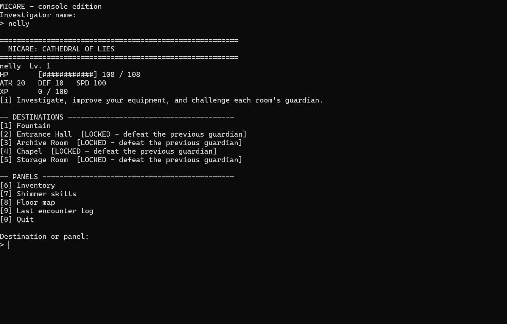
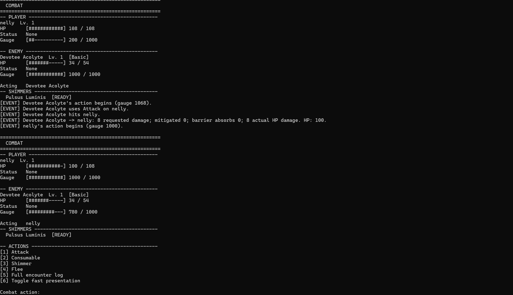

Research
Gameplay systems, architecture, environments, UI, animation, assets, performance, and implementation approaches start with source research instead of guesses.
Solo Game Dev
I build games, systems, and strange worlds. Right now I’m experimenting with a research-driven solo-dev workflow where AI agents can research, implement, test, document, and iterate while I stay focused on direction, design, and final playtesting.

About
NellyData is my little corner for game development, programming experiments, and long-term worldbuilding. I’m studying game development, but most of what interests me happens outside a syllabus: figuring out how far one person can push a modern development pipeline when research, automation, Unreal Engine, code, art tools, and AI agents all work together.
I’m not trying to make the repo history look busier than the game is. A feature counts when it works, a build counts when it launches, and visual progress counts when it survives an actual gameplay camera. The goal is simple: keep making the workflow better until the worlds I want to build stop feeling impossibly large for one developer.
Process
Gameplay systems, architecture, environments, UI, animation, assets, performance, and implementation approaches start with source research instead of guesses.
Build the smallest playable version, keep it in a recoverable state, and prove the interaction before multiplying content.
Compile, playtest, package, inspect, measure, document what actually passed, then keep moving. Authored is not the same thing as verified.
Current Work
I tend to build small playable slices first, then use what survives testing as the foundation for the bigger thing.
Unreal Engine 5 · Active
A noir Art Deco game set in Superbia, an enormous urban wilderness of distinct neighborhoods, traffic arteries, canals, vertical streets, buried infrastructure, intimate interiors, and impossible city scale.
The current target is Vesper Ward: one complete neighborhood-sized pre-alpha slice with Adelaide as the playable character, functioning interiors, civilians, traversal, combat foundations, atmosphere, and enough interactivity to test the full development pipeline before expanding outward into the rest of Superbia.
Development is research-driven and evidence-based. Reference study, web research, asset provenance, implementation research, runtime checks, packaging, and visual review are part of the same workflow.
Unreal Engine 5 · Prototype
An earlier action-game prototype used to explore first-person melee, character pipelines, animation, tools, and autonomous Unreal workflows. It also became a useful sandbox for learning what should and should not be automated.

C++17 · Completed Course Project
A console RPG that grew from a small class project into a complete Floor I loop with exploration, combat, progression, equipment, abilities, bosses, regression testing, and release validation.
Micare is where I started getting serious about keeping implementation, testing, Git history, and project documentation synchronized instead of treating them as separate chores.